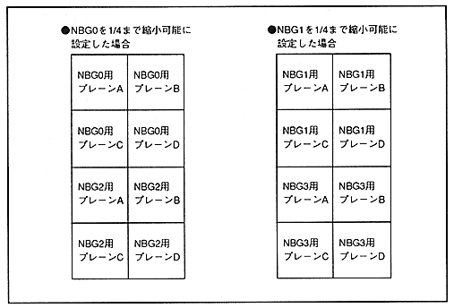

When NBG0 and NBG1 are set so that 1/4 reduction enable bits (N0ZMQT, N1ZMQT) can be reduced to 1/4, the size of NBG0 and NBG1 maps will change from normal. In this case, do not set the screen plane size that can be reduced to 1/4 to 2 horizontal pages x 2 vertical pages. Figure 4.16 shows the size of the map according to the reduction setting.
Figure 4.16: Map plane placement with reduced settings
